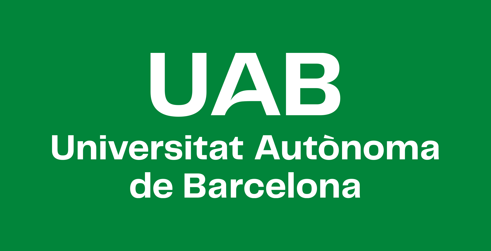

Passionate about Marketing, Communication and Business.
I enjoy creating ideas, connecting with people and contributing
to projects that create real value.
Hi!
I'm Victor, a Interactive Communication student from Barcelona.
I'm passionate about digital marketing, branding, communication &
business development.
During my studies I have had the opportunity to work on marketing
campaigns, event organization and communication projects while
improving my creativity and strategic thinking.
My international experience in Brussels studying communication & business
has taught me how to adapt quickly to multicultural environments,
communicate with people from different backgrounds and continuously
challenge myself.
Education
Universitat Autònoma de Barcelona
Bachelor's Degree in Interactive Communication & Business
2022 - Present
IHECS - Brussels School of Journalism & Communication
International Exchange Programme
Communication, Marketing & Business
2026
Colegio Padre Damián Sagrados Corazones
Social Sciences High School Diploma
2020 - 2022
Experience

Marketing & Communication Intern
Universitat Autònoma de Barcelona
Marketing campaign development.
Content creation for academic promotion.
Promotion of university degrees and educational areas.
Digital communication support.
LaOriginal Communication
LaOriginal Communication
Creation of marketing campaigns.
Support in communication projects.
Event coordination.
Participation in events such as ISE and the Barcelona Bar Association.
Fira de Barcelona
Fira de Barcelona
International event coordination.
Mobile World Congress.
Attendee assistance.
Logistics support.
Sports Sales Advisor
Decathlon
Providing expert customer advice based on individual needs.
Driving sales through excellent customer service and product knowledge.
Ensuring effective product presentation and stock availability.
Building strong customer relationships while promoting an active lifestyle.
Skills
Digital Marketing
Content Creation
Communication
Social Media
Business Development
Event Coordination
Creative Thinking
Problem Solving
Teamwork
Project Management
Sales & Persuasion
Basic HTML, CSS & JavaScript
Database Fundamentals
Languages
Spanish — Native
Catalan — Native
English — C1
French — A2
What I Bring
Fresh ideas
International mindset
Creativity
Adaptability
Strong communication skills
Positive attitude
Curiosity and willingness to learn
Team player
Business perspective
Marketing knowledge
Beyond My CV
I genuinely enjoy learning new skills, discovering new ideas
and working with people from different cultures.
I'm passionate about sports, communication and digital marketing.
I believe that curiosity, commitment and teamwork are the key
ingredients behind every successful project.